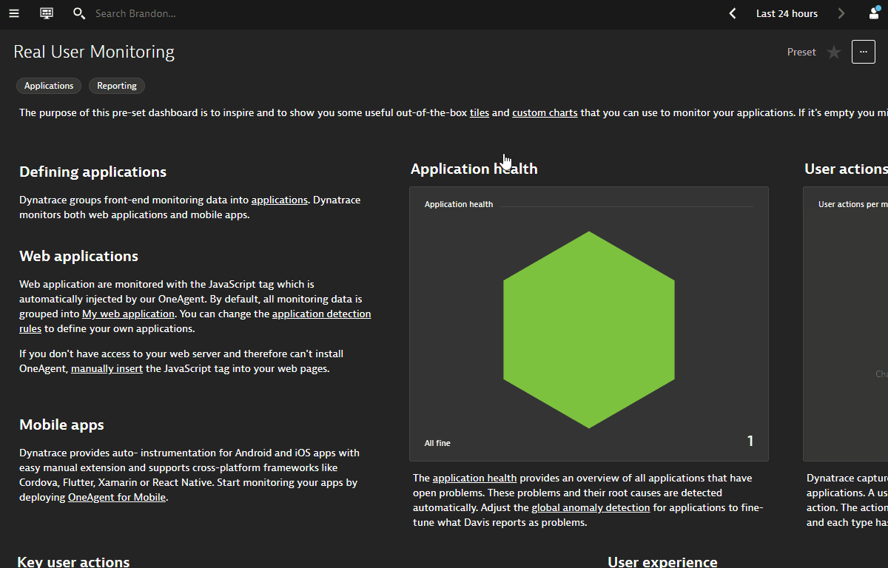
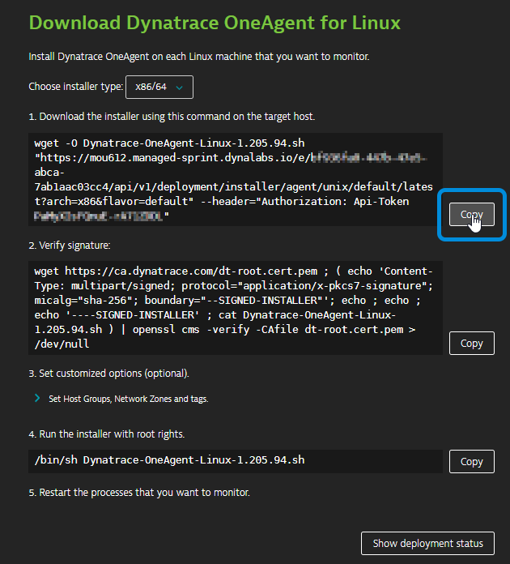
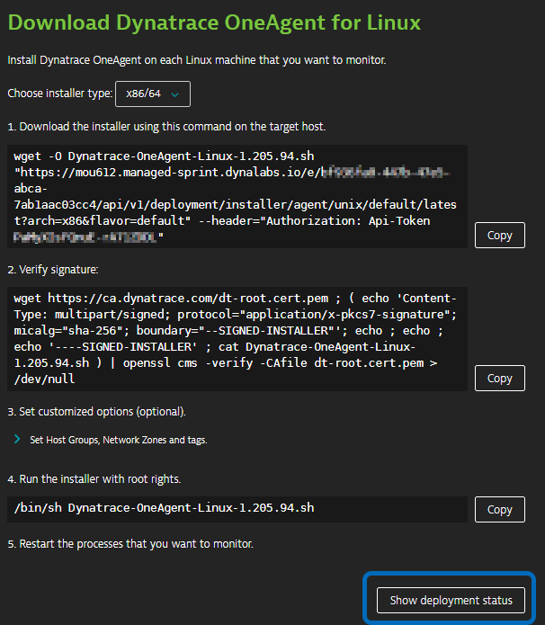
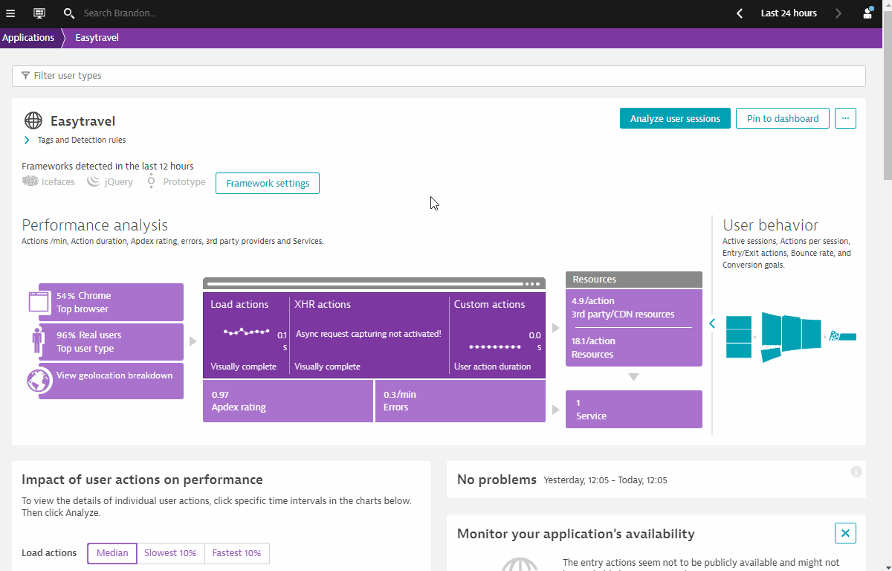

This repository contains the hands on for the Dynatrace Digital Experience Management (DEM) Workshop.
Prerequisites
- Dynatrace SaaS/Managed Account. Get your free SaaS trial here.
- AWS account, with the ability to create an EC2 instance from a public AMI. Signup to a free trial here.
- Chrome Browser
Lab Setup
The following steps are used for this lab:
- Sample Application
- Sample App is based on easyTravel
What You'll Learn
- Understand Real User Monitoring setup with easyTravel App
- Learn Synthetic in Dynatrace
- Learn Session Replay in Dynatrace
- Learn User Session Query Language (USQL)
In this exercise, we will deploy the OneAgent to a Linux instance and let the OneAgent discover what is running in that instance.
Using Terminal via Web Browser
To faciliate the labs, we will access the Linux instance via terminal through a web browser.
Use the URL was provided in your email to access the SSH terminal. Make sure the URL looks like Public IP Address/wetty
Use the login name and password as provided in your email.

Download the OneAgent
Open your browser and access the Dynatrace URL.
Follow these steps below:
- Select Deploy Dynatrace from the navigation menu.
- Click the Start installation
- Click on Linux

Within the Dynatrace OneAgent for Linux page, follow these steps below:
- Click Copy button next to "Download the installer" text field.
- Paste the command into your terminal window and execute it.

Example:
$ wget -O Dynatrace-OneAgent-Linux-1.171.252.sh <follow screen shot above>
--2019-08-07 10:17:45-- https://<URL>
Resolving <URL>... <IP>
Connecting to <URL> | <IP>|:443... connected.
HTTP request sent, awaiting response... 200 OK
Length: 139134801 (133M) [application/octet-stream]
Saving to: ‘Dynatrace-OneAgent-Linux-1.171.252.sh'
100%[======================================>] 139,134,801 84.3MB/s in 1.6s
2019-08-07 10:17:47 (84.3 MB/s) - ‘Dynatrace-OneAgent-Linux-1.171.252.sh' saved [139134801/139134801]
Execute the installation script
- Click Copy button next to "Run the installer" text field.

- Append the copy with
sudocommand to make the script executable before you can run it. - Paste the command into your terminal window and execute it.
- Use the password provided in your email
Example:
$ sudo /bin/sh Dynatrace-OneAgent-Linux-1.171.252.sh
10:21:42 Checking root privileges...
10:21:42 OK
10:21:42 Installation started ...
...
10:22:14 Starting agents...
10:22:14 oneagent service started
10:22:14 Checking if agent is connected to the server...
10:22:16 Dynatrace OneAgent has successfully connected to Dynatrace Cluster Node. After completing Dynatrace OneAgent installation on this machine, please return to your browser to complete the remainder of the installation.
$
Validate the installation in Deployment status
Click on Show deployment status to check the status of the connected host.

You should be able to see a connected host as per the image below.

Restart Easytravel application
To restart Easy Travel execute the following command:
/restart_easyTravel.sh
$ ./restart_easyTravel.sh
Restarting easyTravel ....
Stopping easyTravel ....
OKeasyTravel scenario stopped
Please wait...
Starting easyTravel ....
OKeasyTravel scenario started
Done.
Explore the Easytravel Application
Within Dynatrace, follow the steps below to get Easytravel URL:
- Click on the hostname in the OneAgent deployment screen.
- Expand Properties and tag in Host view
- Select and Copy Public Host name from the metadata
- Open a new web browser tab
- Paste the Public Host name and append
:8080at the end - Access Easytravel App

Explore the Smartscape
While waiting for Easy Travel to start, you can explore Dynatrace and using the Smartscape, Dynatrace will automatically discover the processes and dependencies that comprises the Easy Travel application!
4 things that you will love about Dynatrace!

In this lab, we will cover the basics of configuring Real User Monitoring. These are some of the best practices that should be followed every time the Dynatrace JavaScript agent is deployed, be it an automated or manual injection.
What You'll Learn
- Task 1: Defining an application
- Task 2: Selecting the appropriate JavaScript frameworks
- Task 3: Tagging a user session
Other DEM Setup
- User Actions Naming
- Session Properties
- Conversion Goals
- Key User Actions
- Errors
- Custom Metrics
Some of the above have been automated via API and configured into your environments.
Task 1: Defining an application
Follow the steps below to define your application:
- Select Applications from the left navigation menu.
- Click the My web application placeholder application.
- Scroll down to find the Top 3 included domains panel.
- Click View full details.
- Click on arrow on the 1st domain (internal domain eg. ip-address.ap-southeast-2.compute.internal) to drop down.
- Click on + Create new application
- Your application will be created and listed on the Applications page.
- All user actions that are monitored on this domain will be mapped onto the newly created application.
- Click on Create

Now that the internal domain is mapped, do the same for the external domain.
- Click on arrow on the 2nd domain (external domain eg. external-ip.ap-southeast-2.compute.amazonaws.com) to drop down.
- Click on Transfer

To rename the newly created application:
- Select Applications from the navigation menu.
- Click on .ap-southeast-2.compute.internal application
- Click the Browse button (...) and select Edit.
- For this workshop please use Easytravel as the application name.

Task 2: Selecting the appropriate JavaScript frameworks
To select Javascript frameworks:
- Click on Framework settings
- Note the detected frameworks
- Toggle On the detected frameworks (Eg. Icefaces, jQuery, Prototype)
- Toggle On Capture XmlHttpRequest (XHR)
- Click On Save

Task 3. Tagging a user session
Next, we will be tagging users based on page metadata. This approach to user tagging works by capturing available data in your application's page source. Usernames may be included in the text of a DOM element, a meta tag, a JavaScript variable, or even a cookie attribute. For example, easyTravel, the Dynatrace demo application, includes the user name in a welcome message in the upper-right corner of the home page (see image below). Using the development tools that are built into most browsers, you can generate a unique CSS selector for this particular element.

Once you've identified where usernames are located in your page source, you can create user tags based on the usernames. To do this, return to Dynatrace and execute the following steps:
- Select User tag under Capturing
- Click on Add tag (identifier) rule
- Select the drop down CSS Selector
- Copy and Paste the CSS Selector which you copied earlier from your browser's Developer Tool.
- Use the CSS Selector
#loginForm\:j_idt39 - Since the CSS Selector also picks up some additional text, we can apply a clean up rule.
- Use the CSS Selector
- Toggle ON Apply cleanup rule
- Use
Hello (.*)!on the Regex Text Field - Click on Add tag (identifier) rule
- Click on Save

In this exercise, we will cover creating a single URL synthetic test in Dynatrace. Dynatrace offers three types of synthetic monitoring:
- Single-URL browser monitors
- Browser clickpaths
- HTTP monitors
1. Use One-click creation of browser monitors for Easytravel
- Click on Monitor from private locations on the right column in Easytravel Application
- Selection of Entry Actions is based on the Top 3 Entry Actions
- (Optional) You can edit the Top 3 Entry Actions if needed
That's it! You have created 3 browser clickpaths Synthetic monitors

2. Create a browser clickpath synthetic monitor for Easytravel
Following the instructions below:
- Click on Create a synthetic monitor
- Click on Create a browser monitor
- Copy URL of Easytravel and Paste into URL Browser Monitor
- Name the monitor - Easytravel
- Scroll down and click on Record clickpath
- Pop-up Browser appears. Record clickpath as follows:
- Click on Login (top right)
- Click on small lock icon in pop-up and choose any name
- Click on any Book Now icon
- Click on Next
- Click on small lock icon to complete credit card information
- Click on Next
- Click on Finish
- Close Pop-up browser
- Recorded clickpath is now recorded in Dynatrace
- Click on Next
- Select Sydney (AWS) as location.
- Note that Sydney node is actually a cluster endpoint.
- Click on Next
- Click on Create browser monitor

3. HTTP Monitor
Following the instructions below:
- Click on Create a synthetic monitor
- Click on Create an HTTP monitor
- Name HTTP Monitor - Easytravel
- Click on Add HTTP request
- Copy URL of Easytravel and Paste into HTTP request URL Text Field
- Paste into Name Text Field
- Click on Add HTTP request
- Scroll down and click Next
- Scroll down and Select Sydney (AWS) as location.
- Note that Sydney node is actually a cluster endpoint.
- Click on Next
- Click on Create HTTP monitor

In this exercise, we will cover configuring Session Replay in Dynatrace.
Enable Session Replay
Follow the steps below to enable session Replay:
- Select Applications from the left navigation menu.
- Click the Easytravel application.
- Click the Browse button (...) and select Edit.
- Click on Session Replay and behavior and Session Replay
- Toggle ON Enable Session Replay
- Scroll down and Click on Save

Simulate load for capturing Session Replay
Verify Session Replay
After a couple minutes, you can find your session under User Sessions on Dynatrace's left navigation bar.
- Filter for sessions that have Replay enabled

- Replay your session


Additional configuration for for personal data protection

Dynatrace captures detailed user session data each time a user interacts with your monitored application. This data includes all user actions and high level performance data. Using either the Dynatrace API or Dynatrace User Sessions Query Language (USQL), you can easily run powerful queries, segmentations, and aggregations on this captured data. User Sessions Query Language is a Dynatrace-specific query language, though it does rely on some SQL concepts and the syntax is similar, which makes it easy to get started.
A typical use case for using USQL is to build dashboards to visualize business metrics.

1. Exploring USQL
Follow the steps below:
- Select User Sessions from the navigation menu
- Use the Filter at the top bar, select Easytravel as Application
- Click on User sessions query

Sample queries
Example 1
SELECT DATETIME(starttime, 'MM/dd/yyyy hh:mm', '30m'),AVG(useraction.visuallyCompleteTime)
FROM usersession
WHERE country IS "United States" GROUP BY DATETIME(starttime, 'MM/dd/yyyy hh:mm', '30m')
Example 2
SELECT userId, SUM(totalErrorCount) FROM usersession
WHERE totalErrorCount IS NOT NULL
GROUP BY userId ORDER BY SUM(totalErrorCount) DESC
Example 3
SELECT COUNT(*) FROM usersession WHERE useraction.name = "loading of page /orange.jsf"
Are you able to describe what each sample query is trying to visualize?
We hope you enjoyed this lab and found it useful. We would love your feedback!